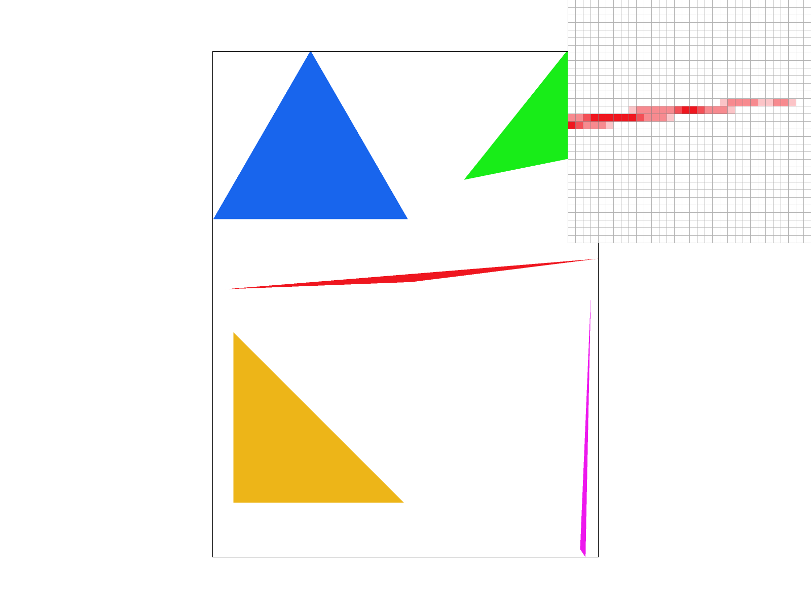

Task 2: Antialiasing by Supersampling
Supersampling Algorithm and Data Structures
Supersampling is a technique used to reduce aliasing artifacts by rendering the image at a higher resolution and then downsampling it to the output resolution. This process averages the colors within a pixel, creating smoother transitions at edges.
To implement supersampling, I modified the rasterization pipeline to support a dynamically sized sample_buffer.
- Data Structure: I resized
sample_bufferfromwidth * heighttowidth * height * sample_rate, since each pixel in the original image is represented bysample_ratesub-pixels. - Rasterization (
rasterize_triangle):- Instead of testing a single point at the center of each pixel \((x+0.5,y+0.5)\), I divided each pixel into a \(\sqrt{\text{sample_rate}}\times\sqrt{\text{sample_rate}}\) grid. I iterate through this sub-grid, checking if the center of each sub-pixel is inside the triangle. Then I store the color of the triangle in the specific index of
sample_buffercorresponding to that sub-pixel. - To maintain the efficiency optimizations from Task 1, I applied the incremental test function updates to work on this sub-pixel grid. The step size for the test functions \((dX, dY)\) is scaled by \(1/\sqrt{\text{sample_rate}}\).
- Also, for the “early exit” from Task 1, I organized the loops to iterate over the high-resolution sample_buffer. By treating the pixel \(y\) coordinate and the sub-pixel \(\text{sub}\_y\) index as a combined row iterator, I can still detect when the rasterizer leaves the triangle on a specific sub-pixel row. Once stepping out of the triangle, I immediately break the inner loop to skip the remaining empty space on that row.
- Instead of testing a single point at the center of each pixel \((x+0.5,y+0.5)\), I divided each pixel into a \(\sqrt{\text{sample_rate}}\times\sqrt{\text{sample_rate}}\) grid. I iterate through this sub-grid, checking if the center of each sub-pixel is inside the triangle. Then I store the color of the triangle in the specific index of
- Resolve to Frame buffer (
resolve_to_framebuffer): For every pixel in the final image, I iterate over its correspondingsample_ratesub-pixels in thesample_buffer. Then calculate the average color of these sub-pixels and write the result to the frame buffer. - Updates to Other Functions:
set_sample_rateandset_framebuffer_target: Resize thesample_bufferwhenever the window is resized or the sample rate changes.fill_pixel: Fill all sub-pixels of a pixel with the same color, ensuring points and lines remain visible.
Result Screenshot

basic/test4.svg at sample rates 1, 4, and 16. The pixel inspector is focused on the tip of the thin red triangle.
- Sample Rate 1: The edges are pixelated. The thin tip of the triangle is broken because many pixel centers fall outside the narrow geometry.
- Sample Rate 4: The edges are smoother. Lighter red appear where the triangle only partially covers a pixel. The tip is better connected.
- Sample Rate 16: The edges look very smooth. The tip of the triangle is fully intact and renders as a continuous line with varying opacity.
Why Extra Memory is Needed
Is it possible to achieve the same results without more memory?
Yes, it is possible, but it comes with significant engineering tradeoffs.
The sample_buffer requires sample_rate times more memory than the frame buffer because rasterization happens per-triangle, not per-pixel. When we draw a triangle, we update specific sub-pixels. Later, a second triangle might overlap the first one, overwriting some of those sub-pixels. To correctly calculate the final average color, we must store the independent color value for every single sub-pixel until all triangles are drawn.
To avoid errors, we would need to perfectly resolve the depth order of all triangles before rasterization, and draw them from back to front (Painter's Algorithm). This approach trades memory for time, because sorting geometry and handling intersecting triangles are complex and time-consuming (potentially \(O(N \log N)\) or worse).